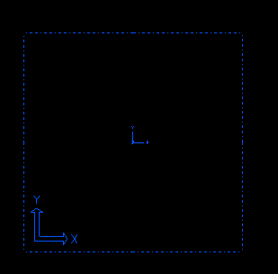
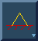
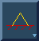
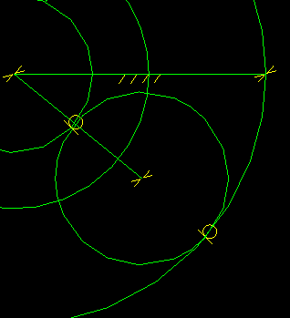
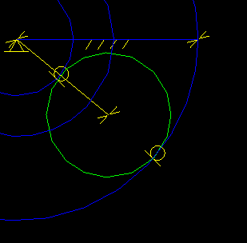
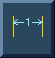
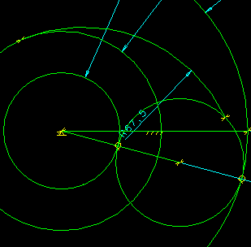
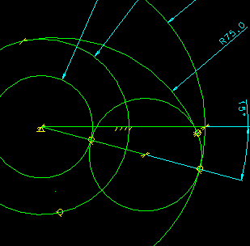
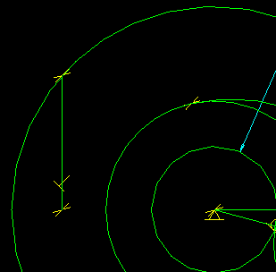
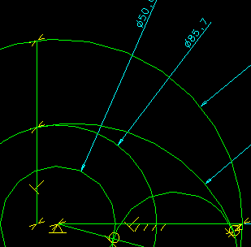

This VGx example shows the shape and size method of creating geometry. It also shows geometry dragging with dynamic constraint recognition. Color Codeing during the constraining etc.
Model file :- VGx_vignettes.mf*
Before
After


 

Start with an empty screen.
Create 3 concentric circles (approx sizes)
Move the dimensions out and change them to arrows out.
Anchor the circle centers.

Add a circle tangent to the large diameter.








NOTE:- As the dimension is added the free/partially/fully constrainted geometry is color coded.










Tech Tips
You must be carefull about the placement of the 3 pint arc.